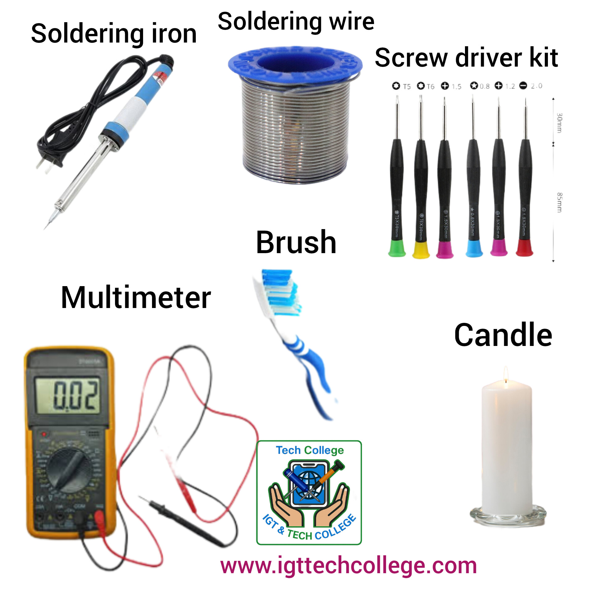
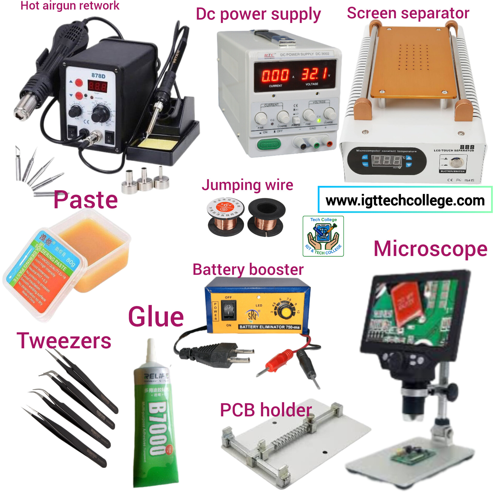
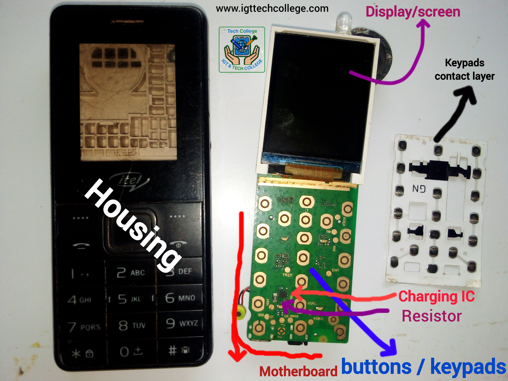
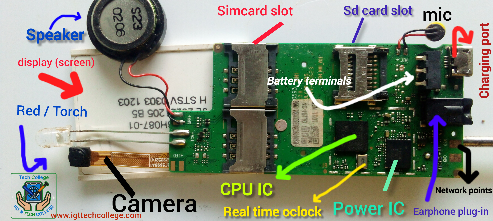

Intangiriro yo kwiga gukora phone
Hari ibintu by'ingenzi ukwiye kwitaho kugirango...
Hari ibintu by'ingenzi ukwiye kwitaho kugirango umenye gukora telephone kandi hari intambwe zikurikizwa kugirango utazacika intege utarangije amasomo yose akenewe. Banza wiyemeze muri wowe ko aringombwa kubimenya uterekereze ubwiza bwabyo kandi utekereze igihe uzaba wabaye umuhanga abantu babwirana ko ibikunaniye ntahandi babishobora
Usabwa kwirinda gutaruka amasomo, umunyeshuri aramutse atarutse amashuri ntabwo yazigera atsinda neza byazasoza avuye mumashuri, ninako bimeze igihe wiga gukora phone ujye wirinda gutarukira kumasomo runaka utarageraho bitewe nuko uyakunda ugomba gukurikiza intabwe zikurikira kandi ntukifuze kubyigira byose umunsi umwe ikindi ukwiye kubanza kumenya gukora phone nto zagatushe mbere yo kwiga gukora inini arizo smartphones.
Bwambere ukwiye kubanza gusoma iri tangiriro ryose,ukamenya ibikoresho byose bikenewe, ugakurikizaho kumenya ibice bigize phone byose byaga telephone gato kamatushe ukiga uko bikora ukiga uko bikurwaho nuko bisubizwaho ukamenya burikuma ni ngaruka gateza iyo kapfuye,urugero ni speaker,mic,charging system, ikirahuri,amatushe,battery taminals,ICs,simcard slot,earnphone plug nibindi byinshi... iyo umaze kumenya ibyo byose none wajya kuntambwe ikurikiyeho ukiga ibikurikira.
Noneho tangirira kukwiga no gusobanukirwa smartphones menya ibize bigize smartphones cyangwa telephone nini ukiga uko bikora ukiga uko bikurwaho nuko bisubizwaho ukamenya burikuma ni ngaruka gateza iyo kapfuye,urugero ni speaker,mic,charging system, ikirahuri,amatushe,battery taminals,ICs zamoko yose,simcard slot,earnphone plug nibindi byinshi.. nkuko tuzabikwigisha, numara kumenya gukora smartphone yapfuye uzajya kuntambwe ikuri,ibikurikira.
Noneho ugeze igihe cyiza cyo kwiga software, usabwa kubanza kumenya phone icyaricyo byimitse nibiki bituma ikora bitaboneshwa amaso aho uzakera mudasobwa menya drivers and connection menya firmware,scatter file,Imei na Serial number icyaricyo nicyo ikora nuko bihindurwa,gu flashinga ,gu kuramo password ,gukuramo FRP no kumenya imikorere yayo,gu formatinga nibindi byinshi tuzakwigisha nugumana natwe. kandi nabwo bizagusaba kubanza guhera kri phone ntoya za matushe wamara kuzimenya ukabona gukurikizaho smartphones.
Amako abiri 2 y'abakozi ba telephoneUsabwa guhitamo hagati yaya abiri ariyo Hardware na Software wahitamo kimwe cyangwa byombi ariko ukirinda kubivanga ukabanza kwiga kimwe wakimenya ukabona kwiga ikindi noneho byose ubimenya wabifatanya mukazi kandi byakubera byiza ndabikwifurije.
Aba tekenisiye ba Software kuri phone
Ni abakora phone bakora ibidafatika uhereye kuri settings ukageza kubikomeye bisaba mudasobwa ndetse namabanga menshi yabimwe bitanemewe mubihugu bimwe nabimwe abo singombwa kufungura phone ndetse wanakora telephone iri mukindi gihugu .
Aba tekenisiye ba Hardware
Ni abakora telephone yapfuye ibifatika nko gukuramo akuma bashyiramo akandi abo rero bakenye gufungura telephone bakagera imbere kubyuma byayo bifatika ni ntoki.

Ibikoresho bikenewe mugukanika phone
Hari ibikoresho byingenzi cyane nibitari...
Hari ibikoresho byingenzi cyane nibitari ingenzi ku mutangizi ,bantu benshi bakunda gucikira intege aha kandi bikaba bitewe namakosa bababigisha baba bwirako bakwiye kubanza kugura ibikoresho byose nibyo batari bamenya gukoresha. twe dusobanukiwe neza ko hagomba gukurikizwa ubumenyi ufite mu kugura ibikoresho kandi buri uko ubumenyi byiyongera wongera ibikoresho.
Njye rero ndakubwira nkurikije ubumenyi ufite nibwo urasobanukirwa neza kuko hari ntabwo wabasha kugira ibikenewe yose
Ibikoresho by'umutangizi
Icyambere ni Soldering iron,Soldering wire,screw driver kit,Candle(buje),multimter,uburoso, Phone zo kwigiraho no kuba ufite amashanyarazi aho wigira cyangwa umuriro uhagije wa solar,
Ibikoresho bikurikiyeho
Icyambere ni Hot airgun retwotrk station ,tweezers,jumping wire,PCB holder,battery booster,DC power supply,Microscopes,LCD screen separator ,paste, sibyo gusa hari nutundi duto duto uzajya ukenera uko ubumenyi bwiyongera , ifoto ikurikiye ho irakwereka ibi bikoresho byose.
Ku mutangizi ibikoresho birahendutse cyane kuruta uko nakubwira nawe uzabyibonera kandi ubwo tugeze kuri iri somo hita ugura ibyibabanze nakubwiye kumutangizi
Ibice bigize telephone ntoya nimikorere yabyo
Ningombwa ko usobanukirwa ibice bigize...
Ningombwa ko usobanukirwa ibice bigize telephone nakamaro kabyo kose kuko nibyo bizagusaba kumenya neza ikibazo phone ifite nuko wagikemura telephone zose ibice byazo nibimwe nubwo wabona zidahuje ubwoko imbere nikimwe ariko ntiwirengagize ko smartphone igira ibice(spares)byinshi kuruta telephone zamatushe. Banza umenye neza ibice bya phone ntoya kuko igihe cyo kwiga smartphone ntabwo umutangizi aribyo aheraho, igihe nikigera nabyo tuzabikwigisha. amafoto akurikiyeho arakwereka amazina nibice bigize telephone ntoya byingenzi.
Housing ya telephone
Housing ni prastics telephone ibimo ndumva nawe nguhaye akanya wabyiyitira izina ushaka , zose rero ntizambarana biterwa nubwoko bwa telephone igiye gushyiramo.
Motherbord / igitanda cya telephone
Phone yose kwisi igira motherboard kuko niyo iteretsweho ibindi bice bose bigize telephone. Phone ntizigira motherboard ziteye kimwe keretse iyo zihuje ubwoko. Motherboard igizwe ninzira nyamukuru ebyiri ariyo postive+ na nagative- kandi ureyse inzira zitiritse imbere muri motherboad izindi zose ni GND (Ground) ariyo negative -.
Buttons/ keypads /AMATUSHE
Keypads hari izigaragarira inyuma dukadaho ariko hari izimbere zimenya itushe dukanze ho. Ayo matushe ureba asa numushongi wa zahabu kuko arimwo akurwa niyo akora iyo dukanze kuri ya matushe agaragarira inyuma . Ayo matushe yimbere agizwe na positive + na negative -
Ayo matushe ureba yutuziga imbere harimo utuziga duto nitwo + naho negative yo ikora kuri utwo tuziga twa kabiri ndetse no kuri ground. Iyi postive yitushe ihujwe na negative cyangwa ground ubwo itushe rihita rikora umurimo waryo rifashijwe na CPU na software programs aho niho tibonera umumaro wa keypads contact layer reka tuyivigeho hepho👇
Keypads contact layer
Keypads contact layer cg agashahi gatwikira amatushe ni akantu kagaragara nkaho ntacyo kamaze ariko gafite umunaro ukomeye. Nkuko twabivuze haruguru kugirango itushe cg button rikore nuko ubanza guhuza positive yaryo na negative.
utwo tuntu twutuma ureba kuri keypads contacy layer nitwo duhiza izompande ebyiri maze itushe rigakora.Iyo umuntu akanze kumatushe ya telephone agaragarira inyuma buri tushe riringaniye nakariya kuma maze nako kakaba karinganiye naya matushe yimbere u bwo bikorwa munzira eshatu kugirango itushe ryandike icyi ushaka, (gukanda kumatushe yinyuma , nayo agakanda kuri contact layer nayo igahuza posite na negative). Uziga byinshi kuri iri somo.
Charging IC na resistor
Charging ic niyo igenzura umuriro phone irakira ikawutwara muri battery ifatanyije na Resistor nayo uziga byinshi kuriyo mumasomo ya za ICs nimikorere yazo. Iyo changing Ic yapfuye nubwo washyiramo ka charging port gashya phone ikwerekako icaginga ariko umuriro ntujyemo cyangwa ikandika ngo charging error ndetse hakaba nubwo biteye phone gushyuha cyane bitenze urugero kuburyo utayibika mumufuka wimyenda wambaye no kumara umuriro vubavuba etc..
Speaker n'imikorere yayo muri phone
Speaker cyangwa mikoro niyo ishinzwe gusohora amajwi yumvikanira hanze iyo turi gucuranga telephone haba sd card cyangwa radio FM kandi niyo twumviraho amajwi yuwo turikuvugana duhamagaranye kuri phone,ariko speaker itandukanye na mic nayo turayivugaho. iyo umuntu turikuvugana ijwi ryuri kuvuga turyumvira muri speaker ariko kuri tecno 528 yo ifite akandi ka mic kabigenewe. speaker igizwe namasinga abiri ariyo isinga ritukura n'umukara , umutuku ni +(positive) naho umukara ni -(negative).
Iyo phone itari gucuranga haba kuri Radio FM cyangwa SD card mikoro iba ayarapfuye , yaracitse amasinga rimwe cyangwa yombi ariko hari nigihe bishobora guterwa na diode zangiritse zihuza inzira aza speaker na motherboard ya telephone.
Mic (microphone) n'akamaro kayo
microphone nayo igizwe n'amasinga abiri ariyo positive na negative (+ na -) mic rero yo akazi kayo nugukurura amajwi (recording), ikurura ijwi ryawe ikaryohereza muri speaker (mikoro)yuwo muri kuvugana akakumva kandi ninako ikurura iryuwo muvugana nawe ikaryohereza muri speaker yawe name uka mwumva. Iyo rero uwo mwahamagaranye wumva ijwi rye ariko wowe ntiyumve iryawe ubwo mic ya phone yawe niyo ifite ikibazo kuko itari gukurura ijwi ryawe ngo iri mwoherereze.
Kandi iyo ufashe amajwi(recording) ijwi ntiryumvikane ahubwo ukumva gusamira gusa ubwo iyo mic iba ifite ibibazo bikurikira: mic yangiritse, gucika amasinga yombi cyangwa rimwe , kwangirika kwinzira zihuza mic na motherboard.
Display (Screen) ikirahuri n'akamaro kacyo
ikirahuri cya telephone kigizwe na moko menshi atandukanye bitewe nubwoko bwa telephone hari ikigira amaguru 16,17,20,24 aho nikuri phone ntoya gusa z'amatushe. ikirahuri umurimo wacyo ni ukwerekana ibiri mugitanda cya telephone(motherboard) kuko uyikuyeho phone nzima yakomeza gukora ariko ntiwabasha kureba ibyo irigukora niyo mpamvu mucyongereza yitwa Display. igizwe namatara atanga urumuri iyo rero yijimye ariko ikerekana ibiri imbere muriyo igihe ushjize kumucyo ayo amatara niyo aba yarapfuye.
Nkuko screen igira amaguru menshi cyangwa se inzira niko buri nzira ifite icyo ishinzwe iyo rero irikwaka umweru gusa bisaba kuyikuraho ugashiraho inshasha cyangwa ukagenzura inzira yikirahuri yangiritse iyariyo ukayunga tutiyibagije ko hari igihe bishobora guterwa na CPU ic tuzayivugaho iyo ushizeho indi bikanga igakomeza kwaka umweru haba hari inzira zo kuri motherboard zangiritse cyangwa cpu ic ifite ikibazo
Red diode / Torch
Torch ni ubwoka bwa diode yitwa Red ishinzwe gutanga urumuri , igizwe na positive + na negative akaguru karekare kurita akandi niko positive + kandi iyo witegereje neza aho itereye kuri motherboard hari akamenyetso ko guteranya kandi ahantu henshi kuri telephone haba hari utimenyetso two guteranya no gukuramo tuzajya tugufasha gusobanukirwa uko uteraho utwuma dushya kuko ubikoze nabi ntibikunda.
Iyo itara rya telephone ritari kwaka ubwo riba ryarahiye cyangwa aka diode gato kumukara kari munsi yaryo karapfuye. Zigizwe nanak atandukanye bitewe nubwoko bwa phone kuko hari izo usanga zifite amasinga ameze nkaya speaker ariko byose nikimwe kuko iritukura ni posite umukara ni negative .
Camera
Akamaro ka Camera ni ugufotora iyo phone itagaragaza neza amashusho wafotoye ahubwo ikwakwereka umwijima gusa kandi wafotoye umuntu cyangwa ikintu runaka ubwo uba ukwiye gusimbuza iyo Camera indi nshya cyangw ukuye muyindi phone biteye kimwe.
Simcard slots cyangwa aho duseseka simukadi
Ntaphone itagira simcard slots ariko zose ntizikozwe kimwe hari niyo usanga ifite imwe indi ebyiri indi eshatu cyangwa enye. Iyo rero simcard irokwemera hgukora kuyondi telephone ariko wayishyira muyawe cyangwa iyu mukiriya ikanga gukora no kwerekana ko yahiye umuri phone ahubwo ikandika insert simcard (bisobanyuye ngo shyiramo simukadi)
ubwo iyo simcard slot yarangiritse cyangwa inzira zayo ziganishs kuri cpu hari izacice. Ubwo rero umuti nugukuraho iyo simcard slot ugadhyiraho indi ariko witonde kuko bitandukanye no kuba simukadi yakweteka ko igiye mo ariko network cyangws rezo ikabura. (ibyo nabyo turabivugaho)
SDCard slot
Sdcard slot nayo igwize nubwoko butandukanye bitewe na phone iyariyo . iyi rero noyo dusesekamo memory cg Sdcard , iyo ushyizemo memory nzima ikanga gukora ubwo iyo sdcard slot iba yarapfuye cyangwa inzira ziyihuza na cpu(umutima wa tekephone) zarangiritse ,Umuti rero ni ukuyisimbuza indi nzima. Inzira zayo kumpande zombi ni 16 niyo havunika kamwe gusa cyangwa kagahetama ntabwo memory yakora ubwi nuguhindura ugashiramo akandi.
Charging port /charging jack
Charging port ni kakuma ducomekamo usb iyo turi gucaginga telephone sibyo gusa kuko kanahuza telrphone na mudasobwa. Charging port za telephone ntoya zigira amoko atandukanye bitwe nubwoko bwa phone ariko inzira zazo zose ziba 5 kandi uzaziga igihe nikigera. Iyo telephone itari kucaginga ubwo charging pirt iba yarangiritse nukuyisimbuza indi bona nubwo hari nigihd byaterwa na charging ic ariko akendi ni charging port iba yangitise n'inzira zayo
Battery terminals /amenyo ya bateri
Battery terminals za telephone za matushe zigizwe namenyo atatu aho ducomeka battery ariko ushobora no kuzabona ifite ane ariko byose bihuriye kumurimo umwe wo gukura umuriro muri battery ikawohereza muri burigice kigize phone, ariko terminals ibafatanya naza capacitors , diode ,ICs ... Munzira eshatu zigize battery terminals ifite positive negative na vibat
Iyo rero inzira yohagati yacitse phone yakora ariko inzira ziruhande zicitse bisaba gusimbuza iyo batteru terminals. Ariko ito nzira yo hagati ifite akamaro kuko niyo ifasha mukoheza umuriro ukwiye utarenze urugero ubwo rero iyo iyo nzira itari gukora haboneka ibibazo bya high temperature cyangwa low temperature (ubushyuhe bukabije cyagwa bucye cyane)
Earphone plug-in
Earphone plugin ni aho ducomeka ekuteri cyangwa earphone kugirango tumvire mumatwi. Iyo itari gukora bishobora guterwa na ekuteri zapfuye cyangwa aka earphone plugin yarangiritse. Kucyemura ikibazo ni uku gadimbuza akandi kazima kandi nayo igira positove na negative.
Network points(ubudomo bwa network)
Iri zina network points riri mubeibshi kuko ni ubudomo bubiri kamwe kitwa GSM akandi kitwa GND Bisobanuye ngo ground Akamaro ka network points nugutanga network ifatanyije na antene ya telephone Uhitegeteje neza nuho bwa bwabwuma buba kuri housing ya telephone bufata kuko ubwo bwuma nibwo antene ya telephone Iyo network points havuyeho aka GND ushobora kunda ahariho hose kuri ground ariko iyo ari GSM bisaba kunga ukurikije inzira zayo (gumana natwe uzabimenya).
Crystals oscillator / real time oclock
Aka niko gashinzwe igihe muri telephone kandi ugakuyeho phone ihita ipfa keretse uzi kugadubizaho nkuko bikwiriye Iyi crystal oscillator igizwe namoko abiri ariyo RF (Reference Frequency) ishinze signal mukorehezanya anakuri network nibindi, na RTC (Real time oclock)ishinzwe igihe kuri telephone (amasaha,itariki n'umwaka). Urumvako ugakuyeho phone ibuze signal yo kuyihiza na system ikoreraho nuguhita ahagarara.
CPU IC na Powe IC
ibi ndabivuga muri magufi kuko hari ikigwa cyateguriwe ICs gusa nitugera ku masomo ya smart phones. Ubundi cpu ni umutima watelephone Naho power Ic niyo igenera buri gice cya telephone umuriro ukenewe idahari phone ntiyakwaka kandi idafite umutima nabwo ntiyakwaka akamaro umutima ugira mumuntu niko cpu ifite muri phone (uzabisibanukirwa)
Gukora Phone (Repair Phones)
Menya uburyo bwo gusana telefone...
Gukora telefone ni amasomo yibanda ku gusana no kubungabunga telefone ngendanwa. Uzasobanukirwa uburyo bwo gusimbuza ibice bya telefone, gusana batiri, no gukemura ibibazo bya software. Iyi nyigisho izagufasha kugira ubumenyi bwo kuba umutekinisiye w'imizindaro.